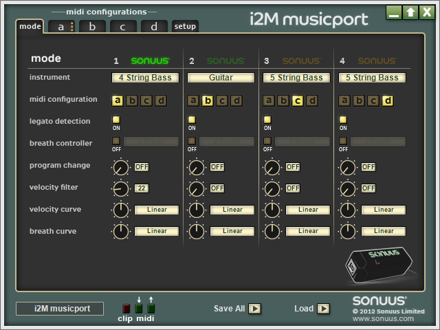
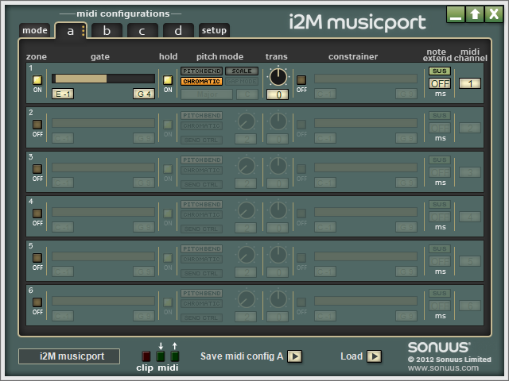

Oggi e' arrivato il Sonuus I2M e l'ho testato con la stessa metodologia della scorsa volta, il ritardo tra l'audio registrato direttamente dall'interfaccia e l'aggiornamento della scena in Unity (suonando la nota E1, la piu' bassa e quindi piu' lenta) e' in media di 4 frame a 60fps (con valori sempre nel range tra 3 e 5 frame): convertendo in secondi il ritardo medio si puo' considerare di 66 millisecondi con un errore di 16 millisecondi (dato dalla scala del campionamento). Sulle specifice del prodotto il tempo di riconoscimento della nota E1 e' indicato come 32 millisecondi, quindi considerando anche il tempo mangiato dal resto della pila sul computer (driver, plugin di Unity e ciclo di update di Unity) mi sembra un buon risultato.
Per quanto riguarda la qualita' del tracciamento delle note (dopo avere configurato con il software), mi sembra leggermente migliore del tracciamento del software MIDI Bass di JamOrigin, ma penso che certe imperfezioni nel tracciamento non siano elliminabili in nessun modo senza postprocessing offline, dal momento che tutte le soluzioni (migliori) che ho provato si trovano nello stesso territorio di "utilizzabile ma non eccezionale", specialmente a velocita' maggiori di 120bpm, quindi una nota ogni mezzo secondo.
Seguono alcune immagini del software per configurare l'I2M:
 Come nota di margine questo dispositivo fornisce anche l'audio in input, permettendo comunque di avere anche questo oltre al valore MIDI, con la possibilita' di amplificare il segnale per gli strumenti passivi.
Dal momento che ora tutte le limitazioni e capacita' del sistema in sviluppo sono note, ho cominciato a sistemare il progetto, partendo dal modello dei dati sul quale si basa il funzionamento del programma.